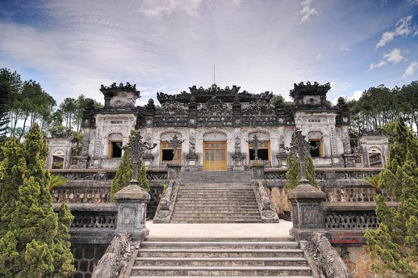
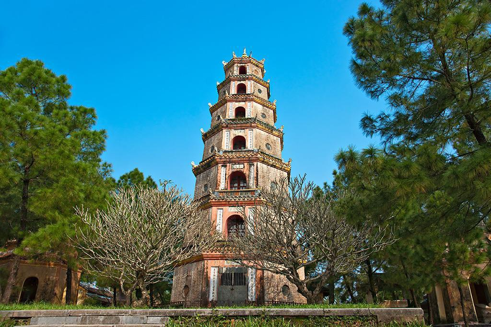
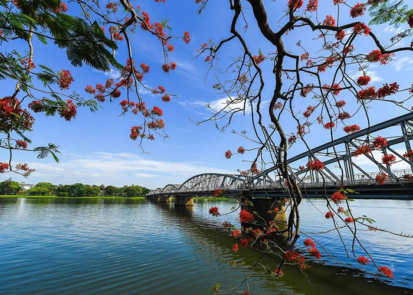
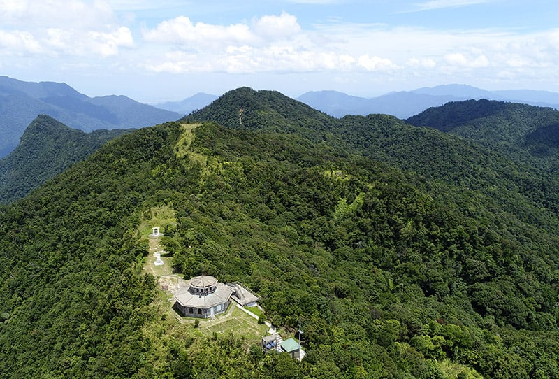
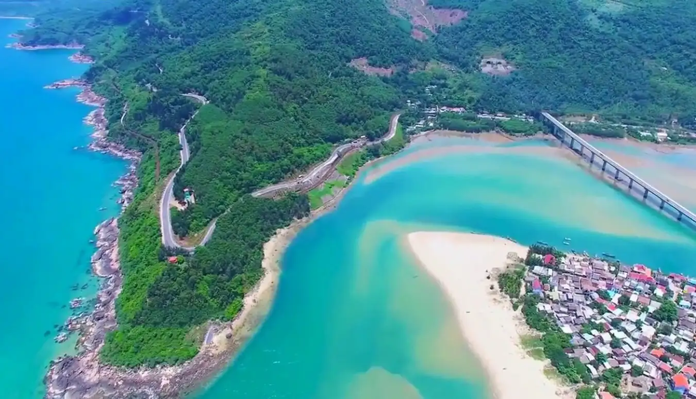

Những địa điểm nổi bật tại Huế
Đại Nội Huế
Đại Nội Huế là quần thể di tích lịch sử của triều Nguyễn, bao gồm Hoàng Thành và Tử Cấm Thành, một trong những di sản văn hóa thế giới được UNESCO công nhận.
Lăng Khải Định
Lăng Khải Định là sự kết hợp độc đáo giữa kiến trúc Đông và Tây, nổi bật với các chi tiết trang trí công phu bằng sành, sứ và thủy tinh.
Chùa Thiên Mụ
Chùa Thiên Mụ là biểu tượng của Huế, nằm bên bờ sông Hương, mang đến không gian yên tĩnh và vẻ đẹp thơ mộng.
Sông Hương
Sông Hương nổi tiếng với dòng nước hiền hòa và khung cảnh thơ mộng, là biểu tượng của cố đô Huế.
Núi Bạch Mã
Núi Bạch Mã nổi bật với khung cảnh thiên nhiên hùng vĩ, những dòng suối và thác nước tuyệt đẹp, là điểm đến lý tưởng cho những người yêu thích khám phá.
Biển Lăng Cô
Biển Lăng Cô có bãi cát trắng mịn, nước biển trong xanh, là địa điểm lý tưởng để tận hưởng thiên nhiên và các món hải sản tươi ngon.